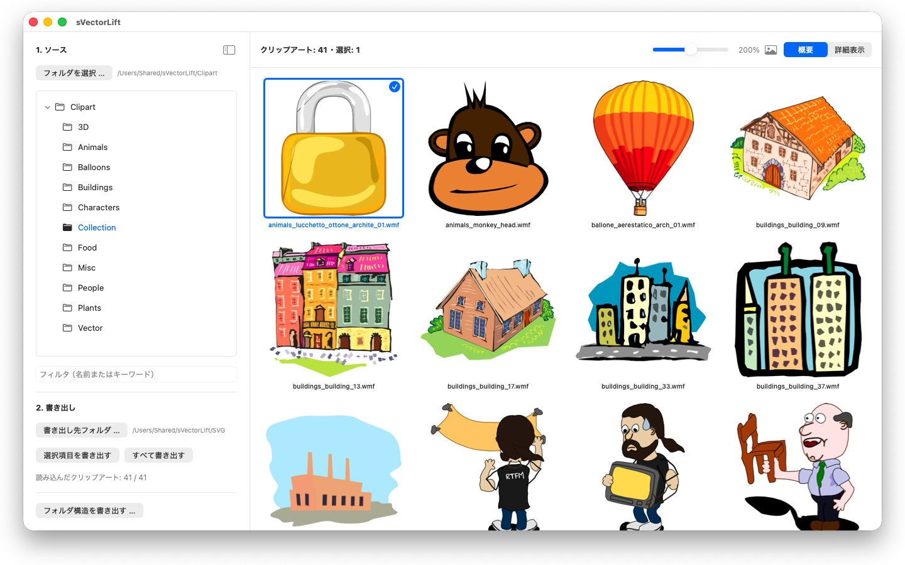
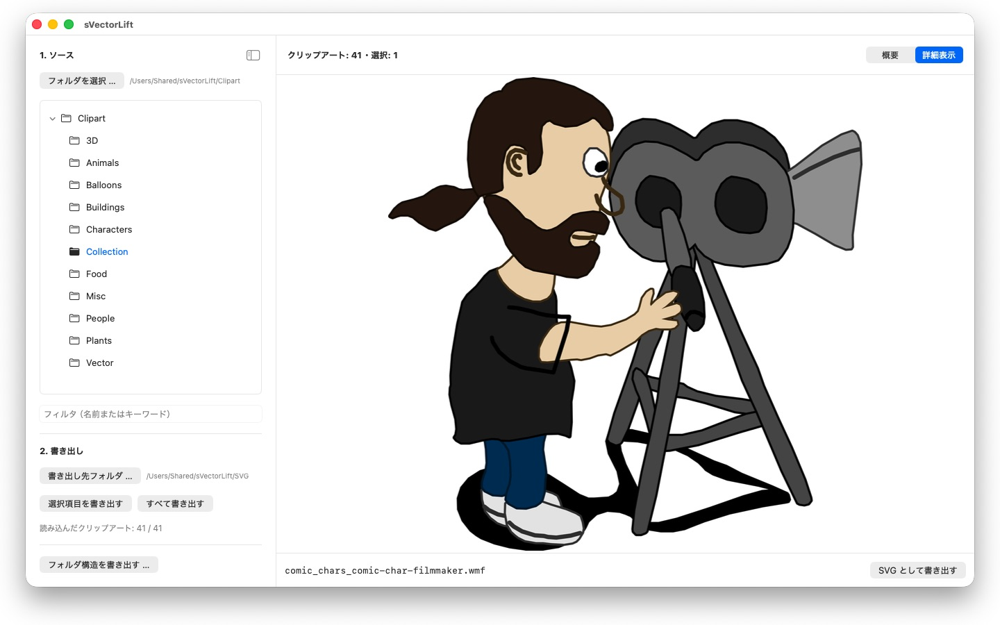

古いCorelDRAWのCDに眠る何千枚ものクリップアート。もう開けない形式に閉じ込められたままです。sVectorLiftは、それらを今日そのまま使えるアートワークとしてよみがえらせます。



棚のどこかに、何年も前に買ったクリップアート集のCDが眠っていませんか。ファイルはちゃんと残っているのに、いまのMacでは何を使っても開けません。
sVectorLiftは、そのアートワークをもう一度「使える素材」に戻します。一枚一枚を本物のSVGとして組み直すので、どんなサイズでも輪郭はくっきり。色も形も編集でき、Illustrator、Affinity、Inkscape、Sketch、Figma、そしてWebサイトへそのまま持ち込めます。ただ「また見られる」だけではありません。「また使える」のです。名前にある「Lift」は、そこから来ています。古いベクター素材を、いまの道具で扱える水準へ引き上げる——それがこのアプリです。
■ 対応フォーマット
・CorelDRAWドキュメント（.cdr）バージョン6〜9
・Corel Binary Meta File（.cmx）— 他のツールが読み込みを拒む古いCDRX形式にも対応
・Windows Metafile（.wmf）
・Computer Graphics Metafile（.cgm）
・QuickDraw 3D Metafile（.3dm、.3dmf）— 画像としてレンダリング
・Scalable Vector Graphics（.svg）— そのまま表示
拡張子が.cdrでも、中身はCorelDRAWではなくCMXというファイルは珍しくありません。一般的なコンバータがつまずくのは、まさにこれが理由です。sVectorLiftは、その両方を読み取ります。
sVectorLiftはクリップアートのライブラリのために作られています。イラスト、シンボル、図版が対象です。ページレイアウト用のツールではなく、複数ページのパンフレットや印刷用のひな形を忠実に再現することは目指していません。
■ 本物のベクター変換
プレビュー用のサムネールを写し取るのではありません。sVectorLiftは図版そのものを解析します。パスとベジェ曲線、塗りの色、グラデーション、輪郭線と破線パターン、パターンやテクスチャの塗り、埋め込み写真、そしてテキストオブジェクトまで。書き出されるのは、拡大しても、色を変えても、編集しても崩れない、正真正銘のベクターデータです。絵を写した画像ではありません。
ラスター画像だけでできたファイルはPNGとして書き出すので、失われるものはありません。
■ ライブラリを見渡す
・サブフォルダも含めた、コレクション全体のフォルダツリー
・くっきりしたベクターサムネールのグリッド表示とサイズスライダ
・矢印キーでフォルダ内を行き来できる詳細表示
・名前やキーワードで絞り込み
・写真アプリと同じ感覚の複数選択：クリック、⌘クリック、⇧クリック、ドラッグ選択、⌘A
・Finderから単一ファイルを直接開く（「このアプリケーションで開く」またはダブルクリック）
・最近使ったフォルダ — 開いていたサブフォルダと選択中のファイルまで記憶
・選択したファイルやフォルダ全体を、まとめて書き出し
・サブフォルダを含むフォルダ構造全体を一度に変換 — 書き出し先フォルダでも同じ構造を維持
・名称変更、Finderに表示、ゴミ箱に入れる
■ 速く、Macにやさしく
サムネールは実際に画面に映っている分だけ、バックグラウンドでレンダリングしてキャッシュします。何千ものファイルの処理を待たされることなく、大きなフォルダもすぐに開きます。
24の言語に対応：英語、ドイツ語、フランス語、イタリア語、スペイン語、ポルトガル語（ブラジル・ポルトガル）、オランダ語、スウェーデン語、ノルウェー語、フィンランド語、チェコ語、ポーランド語、ハンガリー語、ルーマニア語、クロアチア語、ロシア語、ウクライナ語、トルコ語、ペルシア語、タイ語、日本語、韓国語、中国語（簡体字・繁体字）。
すべての処理はMacの中だけで完結します。ネットワーク接続もアカウントも不要。データを収集することもありません。
CorelDRAWはCorel Corporationの商標です。sVectorLiftは独立したアプリであり、Corelとの提携関係はありません。
- macOS 14 以降が必要
- 24 言語に対応
- サポート： SwiftAppsBavaria@gmx.net
その他のApp
sCollectPlay
メディアライブラリのためのプレーヤー。単にフォルダ、iTunes XML、またはsCollectライブラリから、音楽、映画、オーディオブック、ポッドキャストを再生 — ファイルのタグは一切変更されません。
sName2Date
ファイル名の日付を撮影日時として写真、動画、録音に書き込み — IMG_20240115_103000.jpg のようなファイルが、どの写真管理アプリでも正しく並ぶようにします。
sName2Date Lite
一度に 1 つのファイルを扱う版。ファイル名の日付を撮影日時として写真、動画、録音に書き込み、手動で設定し、名前をISO形式にそろえ、すべてを ⌘Z で取り消せます — sName2Date と同じ機能を備えていますが、フォルダ単位の処理はできません。
sCollectPlay Lite
sCollectPlayの軽量版。フォルダ、iTunes XML、またはsCollectライブラリを開くだけで、音楽、映画、オーディオブック、ポッドキャストを再生 — プレイリスト、音声トラック、字幕トラック、スローモーション、コマ送りに対応。1セッションにつきソースは1つ。カラムブラウザ、自分で作成するプレイリスト、最近使ったソースはフル版専用です。
sBikeBridge
ポータルにアップロードせずにライドを分析。FIT形式で記録するあらゆるサイクルコンピュータのFITファイルに加え、GPXとTCXも読み込めます。ライドはMac上の専用ライブラリに保存 — 地図、パワー、心拍数、写真、メモ付きで、重複はインポート時に検出されます。年別・月別の指標と、距離、獲得標高、所要時間によるフィルタでライドを比較できます。地図は必要に応じてオフラインでも利用できます。